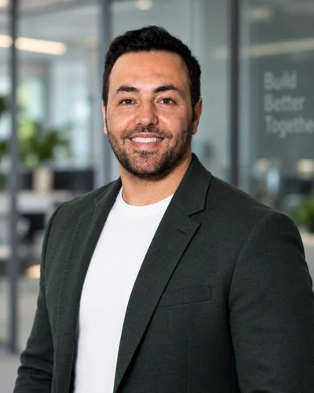

Den Arbeitsalltag verstehen
Von der Gerätebereitstellung bis zur Störungsanalyse: Ich kenne den Workplace-Betrieb und weiß, wie sich technische Probleme auf Nutzer und andere Teams auswirken.
Berlin, Deutschland
IT Engineer
Modern Workplace · Automation · Cloud

Ich bringe Erfahrung aus der Enterprise-IT mit, vereinfache wiederkehrende Abläufe und baue darauf meine Cloud-Praxis auf.
Aktuell vertiefe ich AWS & DevOps bei Clarusway.
01 / Profil
Meine Basis ist die Enterprise-IT: Windows, Microsoft 365, Endgeräte und Identity-Prozesse. Darauf baue ich für Junior-Rollen in Cloud, Automatisierung und Plattformbetrieb auf. Ich bringe Verständnis für die Menschen und Abläufe hinter der Technik mit.
Von der Gerätebereitstellung bis zur Störungsanalyse: Ich kenne den Workplace-Betrieb und weiß, wie sich technische Probleme auf Nutzer und andere Teams auswirken.
Ich habe PowerShell-Skripte angepasst und mit Power Automate an Onboarding, Offboarding und der Übergabe von Service- und Asset-Daten gearbeitet.
Strukturierte Fehlersuche, klare Dokumentation und die Abstimmung mit Fachteams helfen dabei, Übergaben und wiederkehrende Prozesse verständlich zu gestalten.
Von Juni 2024 bis Juni 2026 habe ich den Betrieb einer regulierten Umgebung mit über 4.000 Nutzern und 8.000 Endgeräten unterstützt. Diese Zahlen beschreiben das vom Team betreute Umfeld, nicht meine alleinige Systemverantwortung.
02 / Kompetenzen
Berufserfahrung, Projektpraxis und laufendes Lernen sind unterschiedliche Erfahrungsstufen. Hier siehst du, wie sie in meinem Profil zusammenkommen.
Windows- und Microsoft-365-Support, Endpoint Lifecycle und Intune-/MDM-nahe Prozesse. Active Directory und Entra ID im Support sowie in Identity-Abläufen.
Anpassung von PowerShell-Skripten und neue Skriptbausteine; Power Automate für wiederkehrende Abläufe. Incident- und Request-Bearbeitung mit ServiceNow und Jira.
Eine Azure-SQL-Migration als IHK-Abschlussprojekt und eigene Webanwendungen. Git/GitHub und KI-Werkzeuge nutze ich für Prototypen und Fehlersuche.
Vollzeit-Weiterbildung und eigene Labs mit AWS, Linux, Netzwerken, Infrastructure as Code, Containern und CI/CD. Der Betrieb produktiver Cloud-Plattformen ist der nächste Schritt, auf den ich hinarbeite.
Ebenfalls im Ausbau: Windows Server / AD-Administration, Python, Bash, REST APIs, JSON/YAML und n8n.
OpenAI Codex und Claude Code helfen mir beim Lernen, Prototyping und Debugging eigener Projekte. Generierter Code ist ein Ausgangspunkt: den Ansatz verstehen, das Ergebnis prüfen und das Verhalten testen gehören zur Arbeit dazu.
03 / Projekte
Eigene Projekte ergänzen meine Berufserfahrung. Bei jedem Projekt ist erkennbar, welchen Stand es hat und was es zeigt.
Ein persönlicher Karriere- und Bewerbungsassistent mit CV-Upload, nachweisgebundener Skill-Analyse, Karrierekompass, Jobvergleich und sicherer Bewerbungsvorbereitung in getrennten Nutzerkonten.
Öffentliche Beta mit E-Mail-Anmeldung; Google befindet sich noch im geschützten Testbetrieb. Lebensläufe und Bewerbungsdaten bleiben im jeweils geschützten Konto; Bewerbungen werden niemals automatisch abgesendet.
Ein Projekt zur Verarbeitung von Marktdaten mit Python-Workern, Docker, AWS S3 und Fargate. Im Mittelpunkt stehen Speicherung, Batch-Verarbeitung und das Fortsetzen unterbrochener Jobs.
Öffentliche Portfolio-Version mit Code und Architekturdokumentation. Private Rohdaten und Zugangsdaten sind ausgenommen; es ist ein Research-Projekt, kein produktiver Trading-Dienst.
Code & DokumentationMein IHK-Abschlussprojekt: Planung, Umsetzung und Test einer SQL-Datenbankmigration in eine Azure-Umgebung. PowerShell unterstützte wiederholbare Migrations- und Prüfschritte.
Zeigt Migrationsplanung, Validierung und Projektdokumentation. Systeme des Arbeitgebers und interne Projektunterlagen bleiben vertraulich.
Beruflicher HintergrundEin KI-gestützter Prototyp für Dokumente, Erinnerungen und Alltagsorganisation. Ich erprobe, wie aus einer nützlichen Webanwendung ein AWS-gestützter Dienst entstehen kann.
Der Webprototyp ist erreichbar. AWS-Backend-Bausteine sind vorbereitet; die vollständige produktive Bereitstellung und Validierung stehen noch aus.
Ein persönliches Finanz-Dashboard für Einnahmen, Ausgaben, Vermögen und Haushaltsbudgets, mit Fokus auf Übersichtlichkeit und einfache Bedienung.
Ein eigenes Local-first-Projekt, das Webentwicklung und nutzerorientierte Abläufe zeigt, getrennt von meiner beruflichen Enterprise-IT-Erfahrung.
04 / Erfahrung
Zunächst externer Einsatz über Richard H. Gruber Consulting; interne Übernahme bei ING zum 1. Oktober 2024.
Praktikum im Rahmen der Umschulung.
1st- und 2nd-Level-Support für Windows, Hardware, Netzwerke und Peripherie. Systematische Fehleranalyse, Anwenderschulungen und Support-Dokumentation.
05 / Bildung
Clarusway GmbH
Mai 2026 – November 2026
Berufliche Vollzeit-Weiterbildung mit 1.000 Unterrichtseinheiten zu AWS, Linux, Netzwerken, Automatisierung und Praxisprojekten. Der Lehrplan umfasst Terraform, Docker, Jenkins, Kubernetes, CI/CD, Monitoring und Abschlussprojekte.
FORUM Berufsbildung e.V., Berlin
August 2021 – Januar 2024
Abgeschlossene Umschulung mit IHK-Abschluss. Programmierung, SQL, Systemintegration und Projektdokumentation; Abschlussprojekt zur Azure-SQL-Migration.
FernUniversität in Hagen
Seit Oktober 2025
Laufendes Studium mit Fokus auf Datenbanken, IT-Management, Prozessanalyse und digitale Geschäftsprozesse. Der Studienabschluss steht noch aus.
School of English, Berlin
Februar 2024 – Mai 2024
Geschäftsenglisch, professionelle Kommunikation und berufliches Schreiben.
Universität für Wissenschaft und Technologie, Iran
September 2010 – Juni 2013
Studienerfahrung in Industrieelektronik, elektrischen Schaltungen, Automatisierung sowie Projekt- und Qualitätsmanagement.
Deutsch C2 · Englisch B2 · Kurdisch Muttersprache · Farsi C2 · Dari C1
06 / Kontakt
Du suchst einen IT Engineer, der den Enterprise-Betrieb kennt und sich in Richtung Cloud und Automatisierung weiterentwickelt? Lass uns besprechen, wo meine Erfahrung deinem Team helfen kann.
Standort Berlin · Offen für Gespräche über Vor-Ort-, Hybrid- und Remote-Rollen.